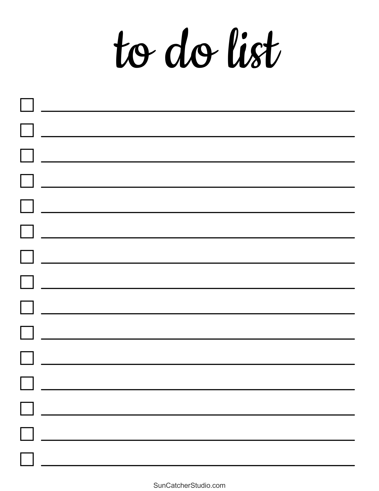

Pasaulē nav nevienas laika pārvaldības sistēmas, kas neietver sarakstu veidošanu un izmantošanu. Mēs varam nēsāt tikai tik daudz savās galvās, tāpēc nepaļaujieties uz savu atmiņu – izveidojiet sarakstu (vai divus)! Tas var būt dienas grafiks, vienkāršs saraksts ar cilvēkiem, kuriem zvanīt, vai lietas, kas jādara mēneša vai nedēļas laikā.
Izmantojot savus sarakstus kā plānu, izveidojiet dienas, nedēļas vai mēneša grafiku, rezervējot saprātīga lieluma laika nišas visiem plānotajiem uzdevumiem un aktivitātēm. To darot, jūs saglabāsit koncentrēšanos un efektivitāti, kā arī nodrošināsit, ka vienmēr būsit lietas kursā un netērēsit laiku, domājot, ko darīt tālāk.
Atrodiet klusu vietu, apsēdieties ērtā krēslā, ieslēdziet mūziku, lai novērstu biroja troksni. Tagad aizveriet visas pārlūkprogrammas cilnes, iestatiet tālruni klusuma režīmā, nolieciet to un sāciet strādāt. Pievērsiet visu savu uzmanību un enerģiju konkrētajam uzdevumam. Iegremdieties tajā. Tas esi tikai tu un tavs darbs. Nekam citam nevajadzētu būt svarīgam un cīnīties par jūsu uzmanību konkrētajā laika brīdī.
Mēs nevaram būt produktīvi divdesmit četras stundas dienā, septiņas dienas nedēļā. Faktiski, ja jūs pārmērīgi strādājat un reti dodat sev iespēju atpūsties, jūsu produktivitātes līmenis krasi samazinās.
Lai gan daudzi no mums joprojām izvēlas savus grafikus un uzdevumu sarakstus veidot uz papīra, bieži vien daudz efektīvāk ir izmantot digitālos kalendārus plānošanai un plānošanai. Šādiem rīkiem, piemēram, Google kalendāram, var piekļūt, izmantojot vairākas ierīces, un tie ir integrēti jūsu e-pasta kontā, lai pilnveidotu gaidāmo tikšanos un sapulču plānošanu. Šie rīki atbalsta arī automātisku periodisku notikumu izveidi. Turklāt jūs vienmēr varat iestatīt atgādinājumus savā digitālajā kalendārā, lai nekad neko neaizmirstu.
Laika plānošanas lietotnes